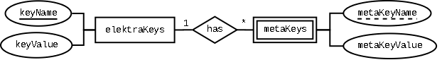

|
Elektra 0.11.0
|
|
Elektra 0.11.0
|
This tutorial describes how to set up unixODBC on Linux and use Elektra to retrieve configuration data from an SQLite or PostgreSQL database.
Currently, the backend_odbc plugin is marked as EXPERIMENTAL and only data sources that define a table for metadata are supported. In the future, we plan to also support data sources without metadata tables.
Please be aware that for using metadata, outer joins have to be supported by the ODBC driver.
The ODBC backend plugin was tested with unixODBC, but should also work with iODBC and Microsoft ODBC (on Windows). If you are using such an environment, feel free to share you experiences at https://issues.libelektra.org or extend this tutorial.
This tutorial uses SQLite- and PostgreSQL databases as data sources, but ODBC drivers for other data sources are also supported.
The tutorial covers the following steps:
The basic database scheme is quite simple. You just need a table that contains two columns which can store a text value. Usually, the SQL data types TEXT, CHAR and VARCHAR are used for that purpose. They must contain valid UTF-8 sequences. One column is used for storing the names of the keys, the other one for storing their values. The column where the key-names are stored should be defined as the primary key (PK) for that table.
Next, we have to create a table for storing metadata. The table for the metadata needs at least three columns:
The column for the key-name and the column for the metakey-name together should form the PK of that table.
Again, all these columns must be defined to store an UTF-8 compatible text. It is allowed that the tables contain more columns, these additional columns are not processed by Elektra, must not be part of a PK and must support NULL- or DEFAULT-values (if you want to add new keys via Elektra).
The following ER-diagram shows the described scheme:

Before we are getting started with setting up unixODBC, we create the databases and store some configuration data in them.
This tutorial is neither an introduction to SQL nor to SQLite or PostgreSQL. If you need more information about these topics, there are plenty of resources available.
For downloads and documentation, please visit the respective websites:
Usually, both database management systems (DBMS) can be installed by the package manager of your operating system.
A pre-configured example SQLite database and the SQL-script that was used to create the tables and fill them with some test data is available at /src/plugins/backend_odbc/sampleDb.
As SQLite as a file-based DBMS, we first create a file for the new database. Afterward, we execute the SQL statements to create the tables and insert some tuples. Please note that the command sqlite3 may be named differently on your system, especially if you use another version of SQLite.
Then, the SQLite command prompt is started, where you can enter your SQL statements. We use the statements as defined in /src/plugins/backend_odbc/sampleDb/prepareDB.sql.
With typing .exit, you can leave the SQLite command prompt and return to your shell.
If you want to use PostgreSQL, a bit more initial work is necessary. It is recommended to set up a user account, create a database and then create the tables using similar SQL statements as given above. You can run the PostgreSQL instance locally on the same computer where you use Elektra, but also on another node in the network. With this approach, it is possible to provide a centralized configuration storage for a whole network. As PostgreSQL natively supports transactions and multiple clients, it is also possible to share the same tables between multiple Elektra clients. Another option is to save the configurations for different users in separate tables. When a user logs in on any client PC in the network, the table with the matching configuration data can then, with some scripting, be mounted via Elektra.
If you need detailed information about how to set up and use a PostgreSQL DBMS instance, there is excellent documentation, including tutorials for beginners, available at the PostgreSQL website.
However, for this tutorial, we present a single-user scenario on a local PC.
The easiest way to install unixODBC, is to use the package manager of your operating system. For example, in Debian and Ubuntu you can install the package with the following command:
sudo apt-get install unixodbc
Alternatively, you can also compile the unixODBC package from source. The download is available at https://www.unixodbc.org. The website also offers some other useful information, like various manuals and a list of supported ODBC drivers. Using drivers not mentioned in that list is in many cases also possible.
The ODBC backend was tested with the following ODBC drivers for unixODBC:
The installation of the drivers should be straightforward. Please refer to the instructions on the websites and the downloaded drivers for how to install these ODBC drivers on your system. Maybe the drivers are also offered as packages by the package manager of your OS.
Now we have to create or edit two configuration files for unixODBC:
On most systems, these files should be stored at /etc/unixODBC/. The content of the /etc/unixODBC/odbcinst.ini file should look like this:
Please check these paths and adjust them so that they match the place where the drivers and setup libraries are stored on your system. At first, the name of the entry is defined, in our example SQLite and Postgresql, then the configuration for the driver is given.
The Threading=2 option enables multithreading support for the SQLite driver. If you don't need to use multiple threads/instances accessing the SQLite ODBC data source in parallel, you can gain a bit of performance by activating the single-threaded mode. In this case you can set Threading=0.
You have to make sure for yourself that only single-threaded use is present. This setting just disables mutexes in the driver. So if you are not really sure what you are doing, it's safer to enable the multi-thread support!
More information about this setting is available at https://www.sqlite.org/threadsafe.html.
The setting FileUsage=1 indicates to unixODBC that the driver is file-based.
After the driver settings, we have to define the actual ODBC data sources in /etc/unixODBC/odbc.ini. This content of the file should look like this:
At first, the data source name is chosen, in our example Selektra and Pelektra, then the configuration values for the data source are defined. The value for the key Driver must match the corresponding name of the entry that is defined in odbcinst.ini.
The plugin for the ODBC backend is currently marked as EXPERIMENTAL and therefore not built by default.
You must use the correct cmake-parameters for the plugin to be built. If you want to build all plugins, you can just use
If you want the default behavior and just additionally include the ODBC backend plugin, you can use the following command:
Alternatively, you can also use the ncurses-based ccmake tool to define the option. For more information about how to build Elektra, please see /doc/COMPILE.md.
Check the cmake output to be sure that the build system finds the ODBC libraries. Otherwise, the backend_odbc plugin gets automatically excluded.
Now, we can finally mount our ODBC data sources into the global Key Database (KDB) of Elektra. Currently, a separate command kdb mountOdbc exists for this purpose. Unfortunately, in contrast to the well-known kdb mount for the file-based backend, currently no additional plugins are supported.
However, for now we use the kdb mountOdbc command. If you just type the command without additional arguments, you get some information about how the command works and which arguments are expected.
Only
system:/anduser:/namespaces are supported for ODBC mountpoints.
Finally, we can create the mountpoint for our SQLite database using the kdb mountOdbc command. Further details about the arguments of the command are available in its man page.
Now we can just access the data like with any other mountpoint.
For unmounting, there is not an extra command for ODBC data sources. You can unmount the ODBC backend, exactly like mounted files: